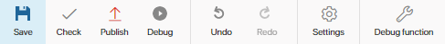
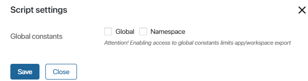

The Scripts tab contains all scripts executed in gateways and Script activities. Scripts are written in the TypeScript programming language. If you’d like to know more about the basic principles of script writing in BRIX, please visit BRIX TS SDK.
Scripts on this tab are executed on the server side, without considering access restrictions to app items. For example, if access to app items in a certain app is limited, and the current user doesn’t have the necessary permissions, the code that retrieves an item will be executed successfully. In the same way, when retrieving all app items, all items will be returned, regardless of the user’s permissions.
In certain scripts, you can use additional parameters. They allow you to fine-tune some process operations or make changes to the script without republishing. Read more about this in the Additional parameters article. 
Toolbar
Above the script editing area, you can see the toolbar.

- Save. Saves the script text as a draft, while the published script will not change.
- Check. Checks the script for errors. Errors found during the check will be underlined in red. Scripts with errors cannot be published.
- Publish. To make it possible for the system to run the script, you need to publish it. Remember to publish the script every time you make changes. Saved but not published changes will not be available to users during the business process.
- Debug. Launches business process debugging. This tool can be used to test how the script works in the process and debug it.
- Undo. Cancels the last action.
- Redo. Repeats the last undone action.
- Settings. This option is available only for scripts in business processes associated with workspaces and apps. Here you can allow or restrict access to global constants. By default, none of the options are selected. 
- Global. Select this option if you want to use the Global constant in the script. It allows you to access variables from other workspaces, as well as global parameters. Please note that using this object makes it impossible to extract the script. This means that if you use the Global constant in a process script associated with a workspace or app, you will not be able to export this workspace or app.
- Namespace. This option allows you to use the Namespace constant in the script. It gives access to all apps in the workspace. You will not be able to export an app with a script containing the Namespace constant, but the export of the workspace it is located in will still be available. The exception is exporting the system workspace as part of the solution. It will not be available because it is performed at the app level.
- Optional dependencies (available in the Imports objects). This option allows you to select workspaces or custom modules and set optional dependencies. Objects of selected workspaces and modules can be accessed through the Imports constant. When using optional dependencies, the workspace or app in which the process resides can be exported without restrictions.
To create a dependency, click +Add Workspace. In the Alias column, set a unique name for the workspace or module that will be used in the script. Latin letters and numbers are acceptable, and you can use an underscore to separate words. By default, the workspace code or module ID is used.
- Debug function. Launch script debugging. This tool allows you to test how a function you wrote works with real values assigned to variables.
Found a typo? Select it and press Ctrl+Enter to send us feedback